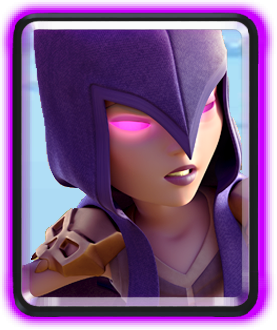
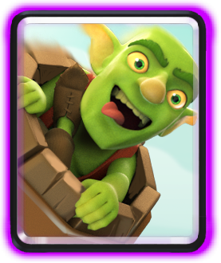
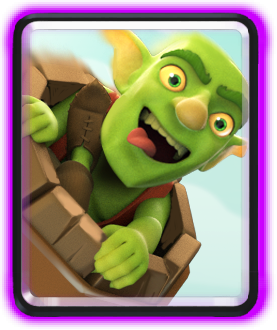

- Spear goblins: 2 elixer
- Bomber: 3 elixer
- Skeleton giant: 6 elixer
- Skeleton army: 3 elixer
- Witch: 5 elixer
- Wall breakers: 2 elixer
- Goblin barrel: 3 elixer
- Fireball: 4 elixer
Average elixer: 3.5 elixer



 


Introduction:
This deck is a fun beatdown deck that can also be used for defence until double elixir. As you can see, this deck has troops only Skeleton or Goblin related.(except Fireball) This deck got me through late-Arena 2 and early-Arena 3 battles with a few changes.Card roles
- Spear goblins-they are the main air defence as well as support troops, but they are highly recommended for defence because you know, they are one of the only air defence troops. If you insist on using Spear goblins on offence, just know they can't do lot's 'o damage.(Only chip damage)
- Bomber-this is your cheap area damage and horde killer. You should never use him for minions, because he only attacks ground troops, not air troops. When countering this troop, be sure to use a spell like fireball and use a Mini P.E.K.K.A. or ranged single troop.(MUSKETEER! HUNTER! BABY DRAGON!) also, don't use Skeleton army since the bomber can DEMOLISH Skeleton army in seconds!(and use Bomber against Skeleton armies hacking at your tanks!)
- Skeleton giant-This is your main win condition. He is a tank and when he dies, He drops a bomb that does 800+ damage that kills most mini-tanks and support troops. He is a great troop to launch a suicide attack on Barbrarians and Witch. For damage on the tower, make a distraction on one lane and Skeleton giant the other.
- Skeleton army-use it to kill any tank without Bomber or Valkyrie support. You can also use it to surround Goblin barrels and mini-tanks. It is also good for killing Giants before they get to the tower, but if there are support troops, the Giant might get a few hits. Basically, defence only.
- Witch-She is your only other air damage troop. Remember: she can be crippled by a Fireball, so spawn her at the back to have more spawned Skeletons. Use her as defence, as she has not much offensive value. The skeletons won't get the tower and the tower might kill the Witch before she can shoot alot. Also, because she is one of your only air defence, spawn her against Prince and Baby dragons.
- Wall breakers-are they Bombers or are they normal Skeletons? Use them for attacking and if the enemy spawns a cannon, launch the Wall breakers. They cripple or kill the cannon for an elixer advantage. Also use them for attacking towers, because if there is no interference, they can deal alot of damage.
- Goblin barrel-How do three Goblins even fit in there? This card is a spell to deal chip damage or distract the tower for a push. A strategy is to first place is right on the tower so that the Goblins spread out. The enemy will likely Arrows or Fireball the Goblins. The next time, throw them into the corner so that the spell misses.(and gives you a good elixir advantage!)
- Fireball-Just Fireball all moderate health things so that the thing is dead or crippled. Fireball everything up to Arena 2 except Giant and Skeleton giant. Also, don't Fireball a king tower, because it will activate the tower, so that the towers will kill your troops twice as fast! Yikes! (a tip from arena 11: don't fireball Tesla when it is underground. It does no damage. Only EQ/Earthquake damages the underground Tesla.)
Strategy
Early game
- Use the Witch to test out your enemy's spells or troops. So say you lured a Skeleton army, then you would know that you could use a Bomber for defence a lot.
- You might use a Skeleton giant at the beginning. It forces a response, but it might be fatal because they will launh a counter attack that can't be beaten before it lands hits on the tower. Even though the Skeleton giant's bomb will get the enemy, the enemy can still deal a lot of damage, so it is not recommended.
- Goblin barrel is a good card to use with Wall breakers. First, place Goblin barrel in the far corner. Then, do Wall breakers at the bridge. If the enemy doesn't think of it as much, this could possibly do 500+ to 1000+ damage!!!
Mid-game
- Play more aggresively with the Skeleton giant and support it with Bobmer
or Witch. The tower will lock on to the Skeleton giant, allowing the
support troop to deal massive damage.
- The Witch can very easily deal tower damage due to her long range, but the skeletons are the actual ones that deal the majority of the damage.
- A bomber can wipe out Skeleton armies and ground hordes. Don't be mistaken: It can do a lot of damage to the tower too!
- This is not a push at the beginning because they can just do a cannon or a spawner and push the other side. If they do so, then FIREBALL IT IMMEDIATELY!
- Watch the opponent's cards. If they have only one building, Wait for them to use it. Then, do Skeleton giant. Support it if you can and maybe you'll even get the tower.
Late-game
- Due to the double elixir, use the Skeleton giant and Witch a lot. They can be used to force a reaction out of the enemy, instead of gathering elixir for a push. That can make the opponent use the cards they want to use for a push.
- Something fun would be a Goblin barrel and a skeleton army for offence. The tower would lock on to the Goblins, allowing your Skeleton army to easily rush to the tower.
- Push with everything. Play crazy and don't allow the enemy to attack.
Main counters and how to deal with them
- Baby dragon-this is a huge counter and it can cripple your Bomber, Wall breakers, Witch, Skeleton army, and Goblin barrel. The way to counter it is to surround ot with Spear goblins and then do Witch. Or, just do a Fireball at it.
- Valkyrie-it is effective against mostly everything in this deck. Fireball it and it should only get one hit on the tower max.